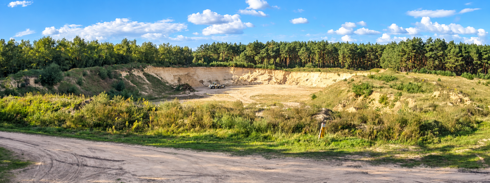
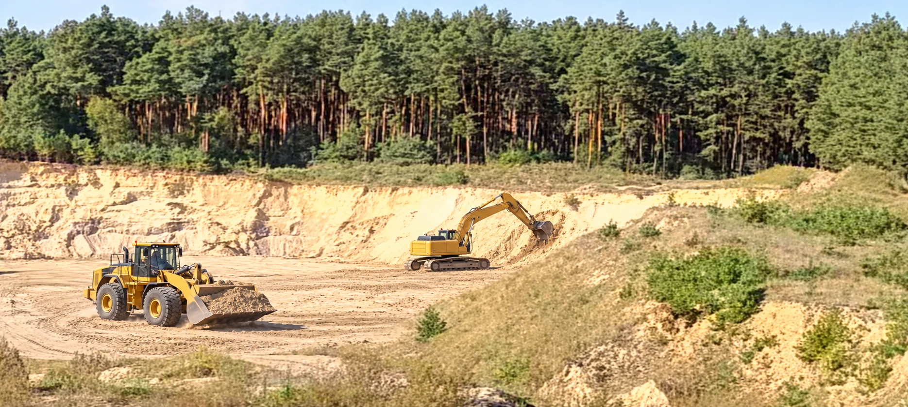

Odzysk w procesie R5
Wykorzystujemy odpady dopuszczone w decyzji do wypełniania wyrobiska poeksploatacyjnego w ramach jego rekultywacji.

W Smolnikach II prowadzimy odzysk odpadów w ramach rekultywacji wyrobiska poeksploatacyjnego. Każde zapytanie weryfikujemy pod kątem zakresu decyzji, rodzaju odpadu i warunków dostawy.
O NAS
Prowadzimy rekultywację wyrobiska po eksploatacji złoża SMOLNIKI II poprzez odzysk odpadów w procesie R5. Posiadana decyzja zezwala na ich przetwarzanie poza instalacjami i urządzeniami przez wypełnianie wyrobiska poeksploatacyjnego.
Współpracujemy także z firmami posiadającymi zezwolenia na przetwarzanie odpadów w innych regionach Polski. Dzięki temu możemy sprawdzić możliwości zagospodarowania odpadów również poza Smolnikami.
Każde zapytanie analizujemy indywidualnie na podstawie kodu i rodzaju odpadu, jego ilości oraz miejsca pochodzenia.
OFERTA
Weryfikujemy możliwość przyjęcia odpadów do wyrobiska oraz pomagamy znaleźć rozwiązanie we współpracy z uprawnionymi podmiotami w innych regionach Polski.
Wykorzystujemy odpady dopuszczone w decyzji do wypełniania wyrobiska poeksploatacyjnego w ramach jego rekultywacji.
Sprawdzamy kod, rodzaj i ilość odpadu oraz warunki jego przyjęcia w odniesieniu do zakresu posiadanego zezwolenia.
Po potwierdzeniu możliwości przyjęcia ustalamy termin dostawy i szczegóły organizacyjne z przedsiębiorcą.
KRUSZYWA NATURALNE
Prowadzimy eksploatację złoża kruszywa naturalnego SMOLNIKI II w gminie Szubin. Oferujemy kruszywo pochodzące z bieżącego wydobycia. O dostępność materiału, jego rodzaj oraz warunki zakupu i odbioru zapytaj nas telefonicznie lub mailowo.
Zapytaj o kruszywo
JAK TO DZIAŁA
Kod odpadu, orientacyjna ilość, miejsce pochodzenia i preferowany termin.
Sprawdzamy zgodność odpadu z decyzją lub dostępność rozwiązania u współpracujących firm.
Po potwierdzeniu możliwości przyjęcia ustalamy termin i kwestie organizacyjne.
KODY ODPADÓW
Prześlij nam kod i rodzaj odpadu, jego ilość oraz miejsce pochodzenia. Możesz zapytać o każdy kod, niezależnie od lokalizacji. Sprawdzimy, czy odpad mieści się w zakresie naszej decyzji, a w pozostałych przypadkach poszukamy możliwości współpracy z uprawnionymi firmami w innych regionach Polski.
ODZYSK ODPADÓW
W wyrobisku po eksploatacji złoża kruszywa naturalnego SMOLNIKI II prowadzimy odzysk odpadów w procesie R5. Polega on na wypełnianiu wyrobiska odpadami wskazanymi w decyzji zezwalającej na ich przetwarzanie poza instalacjami i urządzeniami.
Dokładną lokalizację i wskazówki dotyczące dojazdu przekazujemy po kontakcie. Możliwość przyjęcia odpadu potwierdzamy po weryfikacji zapytania.
KONTAKT
Najszybciej skontaktujesz się z nami telefonicznie lub mailowo. Możesz też skorzystać z prostego formularza. Jeśli pytasz o kruszywo, opisz swoje zapotrzebowanie w polu wiadomości.